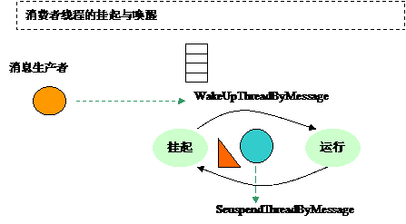
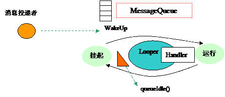
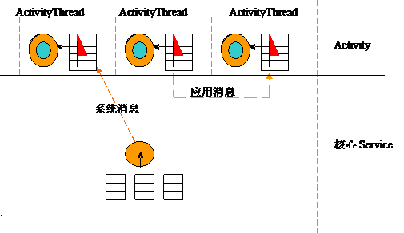
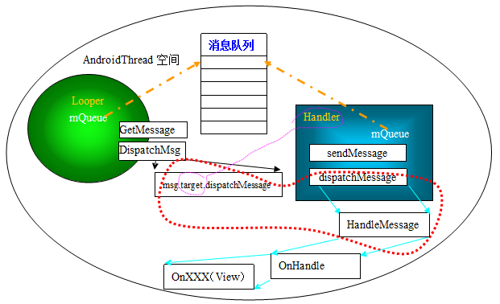

Android GWES之Android消息系统
Looper，Handler，View
我们要理解Android的消息系统，Looper，Handle，View等概念还是需要从消息系统的基本原理及其构造这个源头开始。从这个源头，我们才能很清楚的看到Android设计者设计消息系统之意图及其设计的技术路线。
1.消息系统的基本原理
从一般的系统设计来讲，一个消息循环系统的建立需要有以下几个要素：
消息队列发送消息
消息读取
消息分发
消息循环线程
首先来研究一下消息驱动的基本模型，我使用如下的图形来表示一个消息系统最基本构成：
上面的模型代表应用程序一直查询自己的消息队列,如果有有消息进来,应用消息处理函数中根据消息类型及其参数来作相应的处理。消息系统要运作起来,必定有消息的产生和消费。我们可以从下图看到消息生产和消费的一个基本的链条，这是一个最基本的，最简单的消息系统。
生产线程将消息发送到消息队列，消息消费者线程从消息队列取出消息进行相应的处理。但是这样简单的模型对实际运行的系统来说是不够的，例如对系统资源的消耗等不能很好的处理，我们就需要一个有旗语的消息系统模型，在上面的消息系统模型中加入了一个旗语，让消息消费者线程在没有消息队列为空时，等待旗语，进入到挂起状态，而有消息到达时，才被唤醒继续运行。当然生产者同时也可以是消费者。

2. Android的消息模型
Android要建立一个消息系统使用了Looper，MessageQueue,Handler等概念，从上节的原理我们可以知道这些都是概念包装,本质的东西就是消息队列中消息的分发路径的和消息分发处理方式的设计。Android巧妙的利用了对象抽象技术抽象出了Looper和Handler的概念。在Looper和Handler两个概念的基础上,通过View的处理函数框架，Android十分完美的达到消息分发的目的。 参照基本消息系统描述模型，我给出了Android消息系统整体框架，表示如下：

Android消息系统消息分发框架

3 Looper,Handler详解 Looper只是产生一个消息循环框架，首先Looper创建了消息队列并把它挂接在Linux的线程上下文中，进入到取消息，并分发消息的循环当中。Handler对象在同一个线程上下文中取得消息队列，对消息队列进行封装操作，最主要的就是SendMessage和担当起dispatchMessage这个实际工作。外部系统需要向某个Android线程发送消息，必须通过属于该AndroidThread的Handler这个对象进行。

Handler属于某个线程，取决Handlerd对象在哪个线程中建立。Handler在构建时做了如下的默认动作：
1、从线程上下文取得Looper。
2、通过Looper获取到消息队列并记录在自己的成员mQueue变量中，Handler使用消息队列进行对象封装，提供如下的成员函数：
3、通过post(Runnable r)发送。Runnable是消息处理的回调函数，通过该消息的发送，引起Runable的回调运行，post消息放置消息队列的前面。Message.callback=Runable。
/*** Causes the Runnable r to be added to the message queue. The runnable will
* be run on the thread to which this handler is attached.
*
* @param r
* The Runnable that will be executed.
*
* @return Returns true if the Runnable was successfully placed in to the
* message queue. Returns false on failure, usually because the
* looper processing the message queue is exiting.
*/
public final boolean post(Runnable r) {
return sendMessageDelayed(getPostMessage(r), 0);
}
通过 sendMessage发送。放置在所有的Post消息之后，sendMessage发送消息。（具体源码：）
/*** Pushes a message onto the end of the message queue after all pending
* messages before the current time. It will be received in
* {@link handleMessage}, in the thread attached to this handler.
*
* @return Returns true if the message was successfully placed in to the
* message queue. Returns false on failure, usually because the
* looper processing the message queue is exiting.
*/
public final boolean sendMessage(Message msg) {
return sendMessageDelayed(msg, 0);
}
dispatchMessage分发消息。消息带有回调函数，则执行消息回调函数，如何没有则使用默认处理函数：handleMessage。而handleMessage往往被重载成某个继承Handler对象的新的特定的handleMessage。几乎所有的Message发送时，都指定了target。Message.target=(this).
/*package*/ Handler target;/*package*/ Runnable callback;
....
....
.....
.....
public void setTarget(Handler target) {
this.target = target;
}
Looper运行在Activity何处？我们现在可以从代码堆栈中纵观一下Looper的位置。
NaiveStart.main()ZygoteInit.main
ZygoteInit$MethodAndArgsCall.run
Method.Invoke
method.invokeNative
ActivityThread.main()
Looper.loop()
ViewRoot$RootHandler().dispatch()
handleMessage ....
这样我们就更清楚的了解到Looper的运行位置。